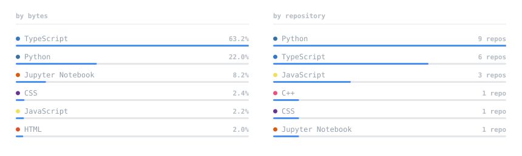

<!doctype html>
<meta charset="utf-8">
<title>preview</title>
<style>
  body { margin: 0; font: 11px ui-monospace, monospace; }
  section { padding: 20px; }
  .light { background: #ffffff; color: #57606a; }
  .dark  { background: #0d1117; color: #8b949e; }
  h2 { font-size: 10px; letter-spacing: .12em; text-transform: uppercase;
       opacity: .6; margin: 0 0 10px; font-weight: 400; }
  img { display: block; margin: 0 0 14px; }
</style>

<!-- Loaded through  on purpose: that is how GitHub serves these, and it
     is the only way to test that the inlined @font-face actually applies.
     An external font URL fails silently here because browsers refuse
     subresource requests for image documents. -->

<section class="light">
  <h2>light &mdash; #ffffff</h2>
  
  
  
  
  
</section>

<section class="dark">
  <h2>dark &mdash; #0d1117</h2>
  
  
  
  
  
</section>
